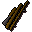

Fly fishing rod

| Config name | fly_fishing_rod |
| Item id | 309 |
| Value | 5 gp |
| Weight | 3lb |
| Members | No |
| Tradeable | Yes |
| Stackable | No |
| Defined in | scripts/skill_fishing/configs/fishing.obj |
Fly fishing rod
Useful for catching salmon or trout.
Sold at
| Shop | Shopkeeper | Stock |
|---|---|---|
| Gerrant's Fishy Business. | 5 | |
| Fernahai's Fishing Hut. | 5 |
Referenced in scripts
scripts/_test/scripts/cheats/cheat_bank.rs2scripts/_test/scripts/debug/debug_fishing.rs2scripts/levelup/scripts/levelup_unlocks_fishing.rs2scripts/skill_fishing/scripts/fishing_spots/freshfish.rs2scripts/skill_fishing/scripts/fishing_spots/lavafish.rs2scripts/skill_fishing/scripts/fishing_spots/lavafish_loc.rs2scripts/skill_fishing/scripts/fishing_spots/saltfish.rs2scripts/skill_fishing/scripts/fishing_spots/waterfall.rs2